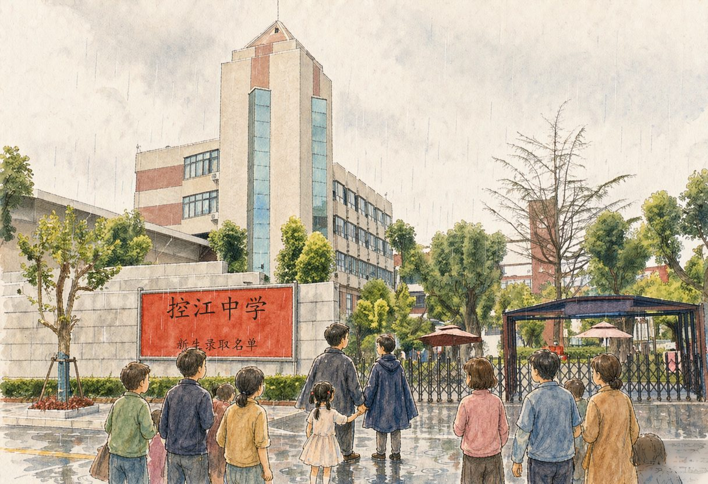

92年春末，女儿即将小学毕业，适逢控江中学“七年一贯制实验班”招生，这个“实验班”是区里的首次尝试，配备了控江中学最强的师资，要招全区小学顶尖的毕业生，一旦录取，七年一贯，也就是免去中考直升高中。
消息传来，我全身的每个细胞都好像注入了一股活力，跃跃欲试的感觉与77年恢复高考时，我自己在农场积极备考的感觉竟然一模一样。
我想自己没有权势可以依靠，公关交际能力也略欠火候。但是“读书应试”还算在行，加上又在普教工作，占了天时地利，此时为了女儿，不施展一番，更待何时？
先是为了报名而奔波。这个“实验班”在全区总共招40来名学生，报名单也是十分金贵，只发500多张，领取的条件是：必须名列各小学毕业考试前2%。女儿偏偏正好“轧出”一一怎么办呢？
忐忑不安地走进控江中学，报名处早已是人头攒动，都是想争取一张报名入场券的家长。人们手里拿着五花八门、大大小小的奖状、成绩单、证明……但大多数还是换不回薄薄的一张报名单。我亲眼目睹一位四十来岁的男子，讲到情急处，一时控制不住，居然涕泪俱下……
见此情景，我只好硬硬头皮，鼓鼓勇气，走到报名处老师的跟前。定定精神，清清喉咙：一、二、三、四一一列举女儿学习的种种长处，最后拿出一张王牌一一女儿参加中心小学毕业年级数学竞赛第一名的奖状，才算勉强领到了一张报名单。
紧接着是缜密的复习计划：语、数、外，早、中、晚，横向、纵向，周密部署。语文一一我把30年前，自己在初中时参加语文兴趣小组时攒下的一点存货都抖落了出来：拟好作文题，教女儿布局谋篇，遣词造句；甚至赤膊上阵，亲自动手写出“范文”，让女儿好生“研读”；外语一一七弯八拐，借来了名校的历届招生考题，让女儿细细琢磨；数学一一更是把华罗庚奥林匹克竞赛题目一一研究，不少题目还拿到单位，与一位数学系硕士生的同事一起探讨，回家后再“喂”给女儿。此情景，就像有的鸟类用消化了一半的食物来哺育雏鸟一般……
现在回想起来，有不少违反教育规律、不符合教育原则的举动，当时也无暇顾及了。心中只有一个念头：“考上了才是硬道理”。
如此这般操练，父女俩苦苦奋斗了数月，终于迎来了考试这一天……
7月2日，是实验班预定张榜的日子。中午时分，细雨蒙蒙，我用雨披裹住女儿，骑上自行车向控江中学出发。
穿过密密的雨帘，掰开红榜前焦急的人群，视线急切地向榜上一排一排整齐地排列的数字扫描。突然，一串数字“*****”跃入眼帘一一呵！这正是女儿的准考证号！“录取了，优优，祝贺你！”我对女儿说着，郑重地握了握她的小手，“唰”几十个脑袋向我们转过来，几十道目光向我们聚焦……
光阴如梭，还来不及用不断更新的教育观念来细细品味这次应考的得与失，女儿已经上了大学，现在大学也早已毕业。
但是我想，用努力的拼搏去争取成功，这种精神应该对女儿的一生有长远的正面影响，那段父女应考的日日夜夜也将成为一段美好的回忆。